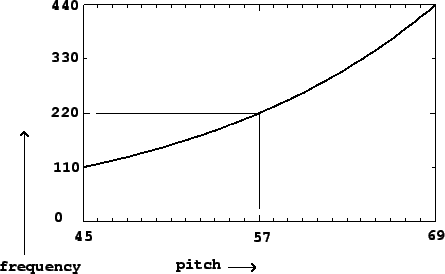
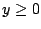
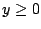
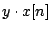
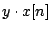
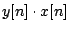
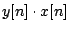

Perhaps the most frequently used operation on electronic sounds is to change
their amplitudes. For example, a simple strategy for synthesizing sounds is by
combining sinusoids, which can be generated by evaluating the formula on Page
 , sample by sample. But the sinusoid has a constant
nominal amplitude
, sample by sample. But the sinusoid has a constant
nominal amplitude  , and we would like to be able to vary that in time.
, and we would like to be able to vary that in time.
|  |
In general, to multiply the amplitude of a signal  by a factor , you can just multiply each sample by
by a factor , you can just multiply each sample by  , giving a new signal . Any measurement of the RMS or peak amplitude of
, giving a new signal . Any measurement of the RMS or peak amplitude of  will be greater
or less by the factor
will be greater
or less by the factor  . More generally, you can change the amplitude by an
amount
. More generally, you can change the amplitude by an
amount  which varies sample by sample. If
which varies sample by sample. If  is nonnegative and if
it varies slowly enough, the amplitude of the product
 (in a
fixed window from
is nonnegative and if
it varies slowly enough, the amplitude of the product
 (in a
fixed window from  to
to  ) will be that of
) will be that of  , multiplied by the
value of
, multiplied by the
value of  in the window (which we assume doesn't change much over the
in the window (which we assume doesn't change much over the  samples in the window).
samples in the window).
In the more general case where both  and
and  are allowed to take
negative and positive values and/or to change quickly, the effect of multiplying
them can't be described as simply changing the amplitude of one of them; this is
considered later in Chapter 5.
are allowed to take
negative and positive values and/or to change quickly, the effect of multiplying
them can't be described as simply changing the amplitude of one of them; this is
considered later in Chapter 5.